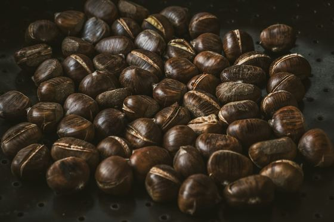
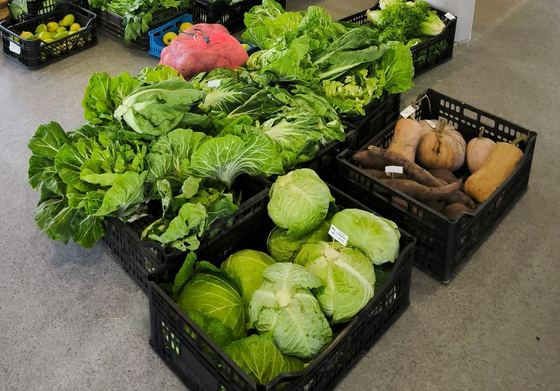
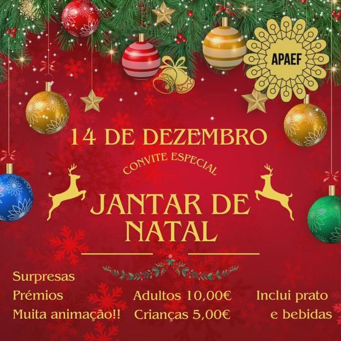
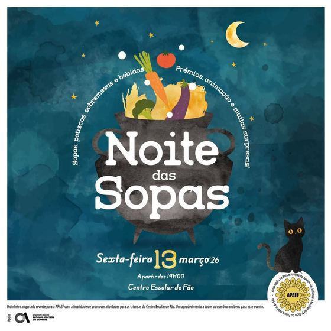
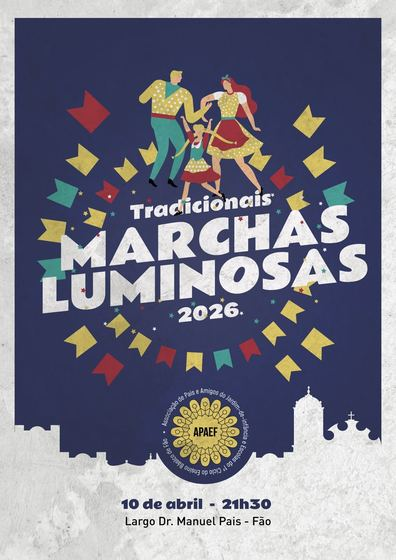
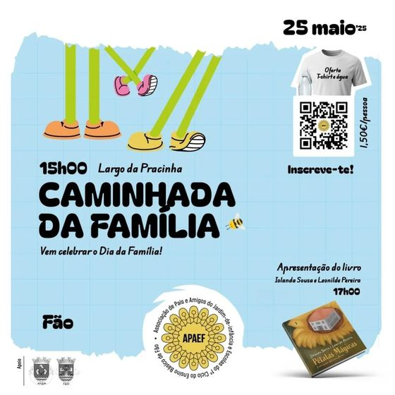
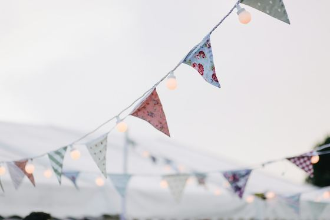

Pais de Fão, juntos pela escola dos nossos filhos.
Somos a Associação de Pais e Amigos do Jardim Infância Escolas do 1.º Ciclo do Ensino Básico de Fão. Aqui encontra a agenda do ano e as inscrições. As novidades e as fotos estão no Facebook.
Agenda 2026/27
O plano de atividades é aprovado a 26 de outubro. As datas podem mudar.
-
⭐ Próxima atividade
Sábado, 31 out · 17h–19h novo!Doçura ou Travessura
Pela primeira vez, vamos andar mascarados pelas ruas de Fão à procura de doces! Tragam as fantasias mais assustadoras e um saco bem grande.
-
⭐ Próxima atividade
11 nov · na escolaMagusto
Chegou o S. Martinho! Castanhas quentinhas, folhas de outono e muita alegria no recreio, ao lanche, com os nossos pequenos.
-

⭐ Próxima atividade
novembro data a confirmarRifas de S. Martinho
Uma rifa, um pequeno gesto que ajuda a escola. Fique atento: os prémios e a data do sorteio vão ser anunciados no Facebook.
-

⭐ Próxima atividade
Quarta, 25 nov · Centro Escolar de FãoFeirinha de Outono
Doces caseiros, compotas, legumes e fruta da época, roupa e brinquedos. Uma manhã de partilha em que cada compra ajuda a nossa escola.
-
⭐ Próxima atividade
dezembro data a confirmarFoto de Natal
Depois da estreia do ano passado, a Foto de Natal está de volta, para guardar a magia desta época com um sorriso.
-

⭐ Próxima atividade
11 dez a confirmarJantar de Natal
Uma noite em família à volta da mesa, com surpresas e muita animação. As inscrições abrem mais perto da data.
-
⭐ Próxima atividade
janeiro datas a confirmarCantar as Janeiras + Rifas de Reis
Bombos, vozes e casacos quentes: vamos levar as Janeiras de porta em porta, como manda a tradição. E há rifas de Reis com prémios!
-
⭐ Próxima atividade
fevereiro data a confirmarCarnaval · Baile de Máscaras
Hora de escolher a fantasia! Uma noite de música, cor e gargalhadas para miúdos e graúdos.
-

⭐ Próxima atividade
fevereiro/março data a confirmarNoite das Sopas
Sopas que aquecem a alma, petiscos e sobremesas feitas com carinho. Uma das noites mais saborosas do ano.
-
⭐ Próxima atividade
março/abril data a confirmarFeira do Livro
Ler é criar mundos. Uma semana para descobrir livros novos e levar para casa uma história preferida.
-

⭐ Próxima atividade
abril data a confirmarMarchas Luminosas do Senhor Bom Jesus
Luzes, música e muitos ensaios: os nossos pequenos voltam a marchar pelas ruas de Fão numa noite cheia de cor.
-

⭐ Próxima atividade
maio data a confirmarCaminhada da Família · Feira da Primavera
Ténis calçados e boa disposição! Uma caminhada em família e uma feira cheia de flores, livros e sabores da primavera.
-

⭐ Próxima atividade
Sexta, 25 junFesta de Final de Ano
O ano termina em festa! Canções, despedidas dos finalistas e um arraial para celebrarmos juntos tudo o que crescemos.
Quer ver as fotos e saber das novidades primeiro?
Seguir no FacebookSobre a APAEF
Quem somos
Pais e amigos das crianças do pré-escolar e do 1.º ciclo da Escola Básica de Fão.
Objetivo deste ano
Melhorar o espaço exterior da escola, sem deixar de fazer atividades para as crianças.
Ajudar
Há muitas formas de ajudar: tempo, um contacto, um prémio, uma ideia. Fale connosco.